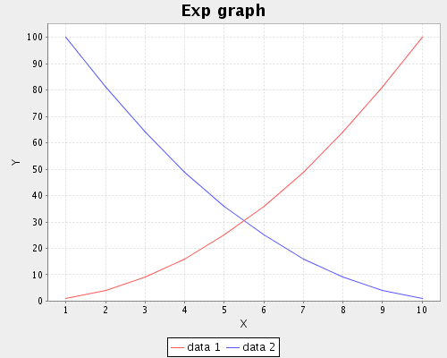

software for testing a random walk
ChartGenerator
ChartGenerator is a program for generating line graphs from the results of the random walk analysis. These results are plain text files having on each its line two numbers (x-axis and y-axis values).
Download
Installation
Download the archive above and extract it. Then cd into its directory and run
sh install.sh This will install the program to your home directory
and executable script to $HOME/bin/. If you run the installation as
a root the program will be installed to /usr/local/ and executable script
to /usr/local/bin/.
If you are Windows user you can always run the program directly:
java -jar ChartGenerator.jar
Usage
Suppose we have installed ChartGenerator on UNIX-like OS. We can run
the program by typing command:
chartgen.
This command without the parameters prints the info about the ChartGenerator usage.
Let's have a look at some cases. We have two data files — data_1 and data_2 as follows:
data_1
1 1 2 4 3 9 4 16 5 25 6 36 7 49 8 64 9 81 10 100
data_2
1 100 2 81 3 64 4 49 5 36 6 25 7 16 8 9 9 4 10 1
We want to generate a graph from both of these data files. We can run:
chartgen data_1 data_2 -out graph.png -title "Exp graph" -legend "data 1|data 2" -size 500x400
This will generate new png image:

As you can see the usage of ChartGenerator is quite intuitive.